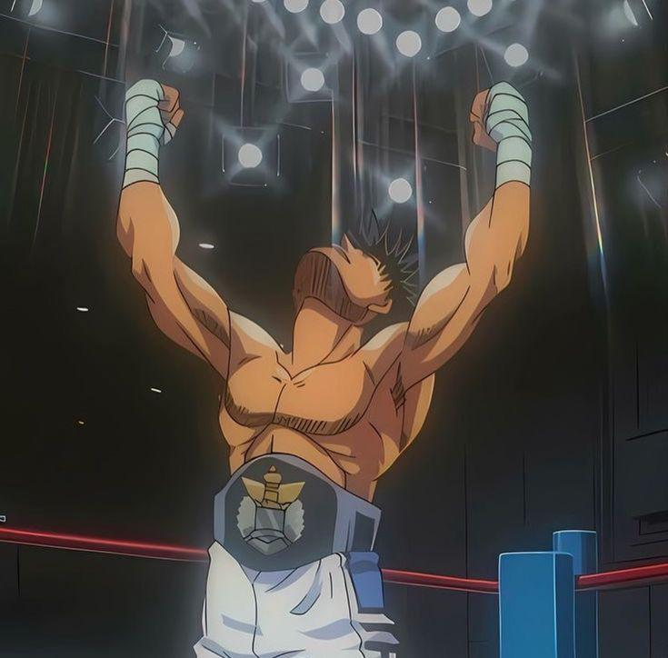

My Background
My name is Abdul Sharifullah and I am currently a student at Dallas College. I am doing the newly introduct Bachelors of Applied Technology program that has been recently introduced. I have been coding since high school and have continued on this path now into my college years. I absolutely love technology and for the longest I can remember, I have been using technology. This lifestyle has led me directly here, pursuing a technology oriented field.
Outside of school, I love to play basketball and go to the gym. I am always doing some sort of physical activity because I love to prioritize my health. I also love playing video games and watching anime, even though it seems contradictory to my previous claim about being active constantly. Having a good friend group to do these activities with is absolutely imperative towards success in school and even outside endeavors. I have a strong support group that I play basketball and game with. I'm blessed to be able to pursue education whilst doing the things that I love. I hope to be an accomplished software engineer, or even simply work in an IT field post college.
My Avatar
For this project, I chose Ippo Makunouchi as my avatar. He’s the main character from Hajime no Ippo, a boxing anime that really stuck with me. I really relate to Ippo a lot. He isn't flambouyant or outgoing, and he is extremely disciplined, dedicated, and committed to his grind and his work ethic is unparalleled. I really relate to that because I believe that at the end of the day, you are going against yourself most of the time. Having discipline and a strong work ethic is always something beneficial you can rely on regardless of which pursuit an individual treads towards.
What I like most about Ippo is his attitude. He’s not cocky or flashy — he’s focused, respectful, and driven. That’s the kind of mindset I try to bring to my own work, especially in tech. Using him as my avatar reminds me to stay consistent and humble, and to keep pushing even when things are challenging. I think that’s a good way to approach learning new skills like coding.
My Web Development Journey
I signed up for this class because I wanted to understand how websites actually work. It's been so incredibly interesting knowing what's going on behind the scenes now. It goes without saying I have a long way to go, but this has been an incredible first step in opening my eyes towards web development. I want to get better at coding, and diversify my skills as a software engineer. This class has definitely started to help me out with that pursuit.
My goal is to get better at coding and maybe build my own portfolio site one day. I know this is just the beginning, but it feels good to start. I also like that we’re using tools like GitHub and VS Code, because I’ve heard those are important in the real world. I’m not perfect at any of this yet, but I’m learning every week. I feel like I'm on the right path and I’m excited to see where it takes me.